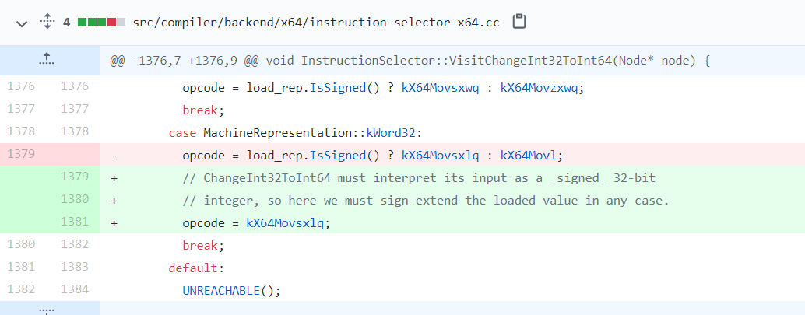

昨天4月13日Rajvardhan Agarwal公开了一个chrome renderer的0day exp，貌似这个0day就是前几天pwn2own 上_niklasb和bkth_打穿chrome用的renderer RCE。
漏洞在v8里修复的commit是
，可以看到这个commit是4月12日刚提交的。所以这应该也是Rajvardhan Agarwal说的为什么v8最新版已经修复了但是chrome还能触发的原因;p
漏洞分析
提取出poc如下
1 | const arr = new Uint32Array([2**31]); |
运行d8 –allow-natives-syntax poc.js，可以看到
1 | -2147483647 |
-pow(2,31)+1=-2147483647。jit优化前运行结果-2147483647=0xFFFFFFFF80000001，jit优化后运行结果2147483649=0x80000001。
通过修复的commit可以发现，这里只改了一行代码就是在操作数是Word32时不管是否是有符号类型jit生成的汇编码均为Movsxlq。Movsxlq命令将操作数的第[31]位即32位数的符号位复制到64位寄存器的高32位，即
1 | dst[63:32] = src[31] |

而修复前对无符号数Uint32会使用汇编码Movl，如poc中的new Uint32Array([2**31]);，这样就会导致jit优化后的代码操作数出现typer错误。
使用d8 –print-opt-code //poc.js可以看到jit优化生成的汇编码。截取部分汇编码如下，其中rcx保存arr对象，0x443000840a3做arr的加法操作，0x443000840b5将加法操作结果使用movl将加法结果rdi保存到rcx准备返回，可以看到补丁前正是这里的movl消除了加法结果rdi的符号位。
1 | 0x44300084096 56 48b95585140843040000 REX.W movq rcx,0x44308148555 ;; object: 0x044308148555 <Uint32Array map = 0x44308303105> |
漏洞利用
由于jit优化前-pow(2,31)+1实际计算结果应为-2147483647，经过jit优化后jit compiler认为计算结果为2147483649。我们可以利用这两者的差异构造一个OOB array。
Rajvardhan Agarwal的方法是取优化后x的绝对值与2147483647的差和0的较大值，这样优化前[1]处x的值为0；优化后2147483649截取pow(2,31)有效位结果为1，[1]处计算结果x为1，导致[2]处实际为new Array(0)，经过arr.shift()操作arr.length-1后arr实际长度为4294967295=0xFFFFFFFF。
1 | x = Math.abs(x); |
可以从release编译的v8中看到这一结果
1 | const _arr = new Uint32Array([2**31]); |
运行得到类似如下结果
1 | 0x102e0834f905 <JSArray[4294967295]> |
有了这样一个OOB array就可以RCE了;p。
总结
从poc来看这个漏洞可能是通过代码审计的方式挖到的，看来无论从学习c++的角度还是挖洞的角度/src/compiler中的代码都还值得一看。